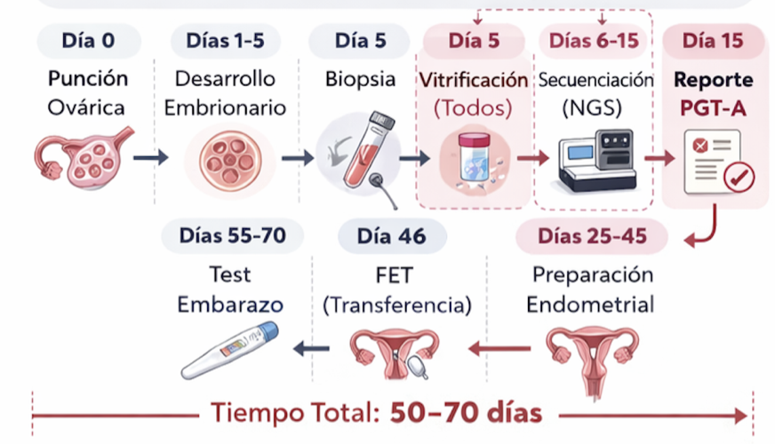
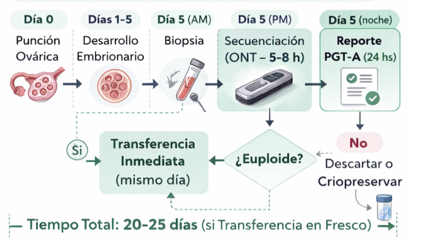

FastPGT: Producto 2pq
Ánálisis genético de embriones y transferencia en fresco en clínicas IVF
FastPGT es una estrategia de análisis genético de embriones basada en la secuenciación rápida, de muy baja cobertura, que permite obtener resultados clínicos dentro del mismo ciclo de cultivo embrionario. Este enfoque permite habilitar la transferencia embrionaria en fresco, superando las limitaciones temporales, operativas y económicas de los esquemas convencionales practicados en las clínicas de IVF. En este informe se describen las características técnicas, experimentales y económicas que muestran la viabilidad del FastPGT en el mercado de las clínicas de FIV.
1. Objetivo
El objetivo de este informe es doble: por un lado, mostrar que FastPGT es una estrategia técnicamente viable y económicamente competitiva frente al PGT-A convencional, y por otro, delinear una propuesta general de inversión para el desarrollo de este producto en: 2PQ: Precision & Quick Genomics, una empresa de diagnóstico genómico rápido en escenarios donde el tiempo de respuesta es clínicamente crítico.
Este documento presenta los elementos necesarios para comprender el problema, la solución propuesta y los escenarios operativos viables. Los fundamentos técnicos, experimentales y económicos se desarrollan en los Apéndices que acompañan este informe.
2. Problema
En los esquemas convencionales de Diagnóstico Genético Preimplantacional de Aneuploidías (PGT-A), el tiempo de entrega de resultados suele extenderse entre varios días o semanas. Esta limitación temporal obliga, en la práctica del laboratorio de embriología, a vitrificar el embrión luego de la biopsia y posponer la transferencia del o de los embriones seleccionados a un ciclo posterior (Figura 1).

Este enfoque introduce una serie de consecuencias clínicas y operativas relevantes en el centro de fertilización asistida, entre las que se incluyen la interrupción del desarrollo embrionario mediante vitrificación y desvitrificación (warming), el aumento de manipulaciones técnicas, la necesidad de ciclos diferidos con mayor complejidad logística de las clínicas, y un incremento significativo del costo total del tratamiento para el paciente. Adicionalmente, la prolongación del proceso se asocia a mayor ansiedad del paciente y mayores tasas de abandono.
El PGT-A convencional genera flujos de trabajo fragmentados, regulando de manera obligada la operatividad de las clínicas de reproducción asistida.
3. Solución: FastPGT
FastPGT propone un cambio de paradigma: obtener un resultado del PGT-A dentro de una ventana temporal compatible con la transferencia embrionaria en fresco (FET), sin necesidad de vitrificación post-biopsia (Figura 2).

El enfoque se basa en el uso de secuenciación en tiempo real mediante Oxford Nanopore Technologies (ONT), y explota tres características operativas clave de esta tecnología:
- Adquisición y evaluación dinámica de los datos,
- Corte temprano (early stop) una vez alcanzada la información mínima requerida,
- Reuso controlado del flow cell, optimizando el costo por ensayo.
Estas propiedades permiten adaptar el ensayo al número real de embriones disponibles y al tiempo clínico efectivo, sin comprometer la robustez diagnóstica requerida para PGT-A.
Como consecuencia, FastPGT elimina la necesidad de vitrificación post-biopsia, reduce la fragmentación del proceso clínico y devuelve a la clínica un mayor control sobre los tiempos del tratamiento, sin dependencia de laboratorios externos ni calendarios diferidos.
4. Escenarios operativos de FastPGT
El análisis conjunto de los resultados experimentales y del modelo económico permite definir un conjunto acotado de escenarios operativos viables para la implementación clínica de FastPGT. Estos escenarios se derivan directamente de:
- los umbrales de datos por embrión evaluados experimentalmente (45–75 Mb),
- los tiempos de secuenciación estimados bajo esquemas de early stop,
- y el prorrateo de costos por corrida y por embrión bajo políticas realistas de reutilización del flow cell.
Los fundamentos técnicos de estos escenarios se desarrollan en el Apéndice Experimental y los supuestos económicos en el Apéndice Económico.
4.1. Resumen operativo de escenarios FastPGT
| Escenario | Embriones | Mb / embrión | Tiempo / seq* | Costo total** | Costo / embrión** |
|---|---|---|---|---|---|
| FastPGT (baja carga) | 5–6 | ~45 Mb | ~1–2 h | ~760–920 | ~150–170 |
| FastPGT (carga intermedia) | 7–10 | ~45–75 Mb | ~1.5–3 h | ~880–1,150 | ~110–140 |
| Batch no-FastPGT | 24 | ~45 Mb | ≥3–4 h | ~2,050–2,240 | ~85–95 |
* Tiempos estimados para MinION R10.4.1 bajo esquemas de early stop definidos por Gb passed, según rangos de rendimiento documentados en el Apéndice Experimental.
** Costos estimados para políticas de reutilización del flow cell con 4 ≤ k ≤ 6, según el modelo detallado en el Apéndice Económico.
4.2. Interpretación operativa
- Los escenarios FastPGT (5–10 embriones) permiten obtener resultados genéticos dentro de ventanas temporales compatibles con transferencia embrionaria en fresco, sin requerir vitrificación post-biopsia.
- El costo por embrión en estos escenarios se mantiene competitivo y queda ampliamente compensado por los ahorros clínicos indirectos asociados a la eliminación de ciclos FET.
- El escenario batch (24 embriones) representa una alternativa económicamente eficiente cuando el tiempo no es crítico, pero no habilita transferencia en fresco y reproduce la lógica operativa del PGT-A convencional.
En conjunto, estos escenarios definen un marco operativo flexible, en el cual FastPGT puede adaptarse tanto a contextos clínicos orientados a rapidez de decisión como a esquemas de procesamiento por volumen, manteniendo coherencia técnica y económica.
5. Impacto clínico y económico
La posibilidad de realizar transferencia embrionaria en fresco reduce manipulaciones técnicas, simplifica el flujo asistencial y preserva la sincronía embrión–endometrio. Desde el punto de vista económico, los ahorros asociados a la eliminación de vitrificación, warming y ciclos diferidos superan ampliamente el costo incremental del test genético.
FastPGT permite así redistribuir el costo del diagnóstico genético dentro del proceso global de FIV, mejorando la eficiencia clínica y la experiencia del paciente.
Para una descripción completa sobre los costos asociados a la eliminación de estos pasos intermedios en las clínica de IVF, ver Ventajas económicas del FET.
6. FastPGT primer producto 2PQ
FastPGT no constituye únicamente una optimización técnica del PGT-A, sino un habilitador tecnológico para nuevos modelos de servicio basados en diagnóstico genómico rápido. Yaguarecito es otro!
En este contexto, 2PQ: Precision & Quick Genomics se plantea como una plataforma orientada a proveer diagnóstico genómico de alta precisión en escenarios donde el tiempo de respuesta es crítico, tanto en reproducción asistida como en medicina neonatal.
Queda desarrollar el apéndice CAPEX 2PQ..
- FastPGT es técnicamente viable, basado en principios sólidos de cobertura genómica y secuenciación en tiempo real.
- La evidencia experimental disponible demuestra equivalencia diagnóstica con el PGT-A convencional para CNV ≥10 Mb.
- El modelo operativo permite corridas flexibles de 5–10 embriones, compatibles con transferencia embrionaria en fresco.
- Desde el punto de vista económico, FastPGT es competitivo por embrión y genera ahorros netos relevantes al eliminar vitrificación y ciclos diferidos.
- FastPGT se posiciona como una plataforma tecnológica robusta para innovación en diagnóstico genómico aplicado a reproducción asistida.
Los apéndices que acompañan este documento proporcionan el detalle técnico, experimental y económico necesario para una evaluación completa y fundamentada.
7. Calculadora interactiva FastPGT
La aplicación puede ejecutarse desde cualquier ubicación en la terminal:
cd ~/Documents/2pq/FastPGT && R -e “shiny::runApp(‘FastPGT_app’)”
Una vez ejecutado, abrir en el navegador la URL mostrada en consola (ej: http://127.0.0.1:xxxx)